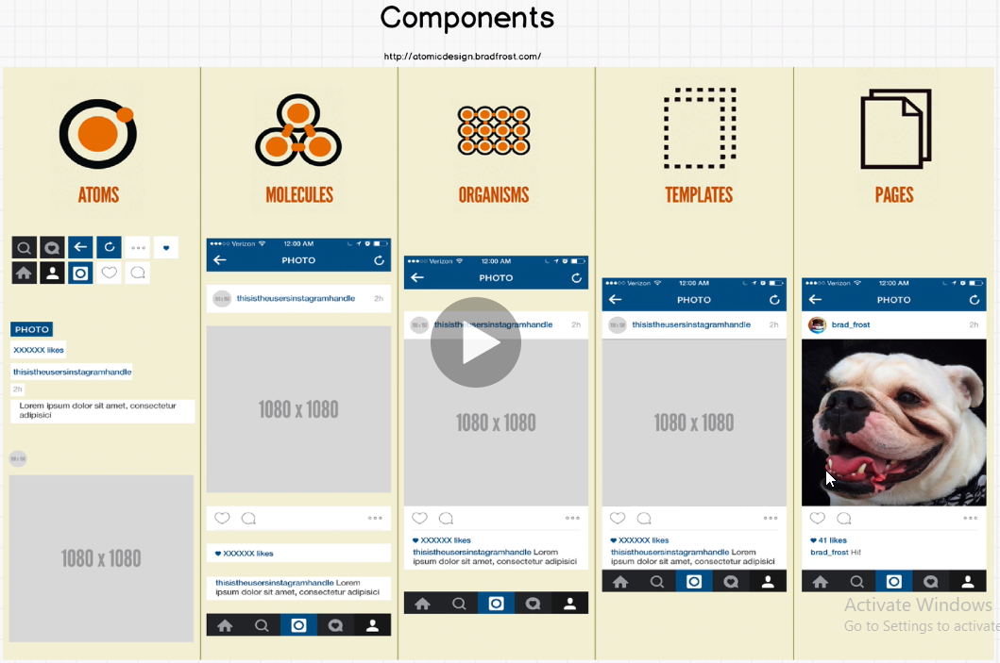

Angular vs React vs Vue
-->All of them with the goal of managing large applications on the front-end that have a lot of javascript
-->if i was working for large bank with massive codebase i would pick angular Because angular is a framework which means it's an entire kitchen
-->I would pick React if i work for a company with strong developer team and that also needs to be flexible and evolve by adding different libraries and tools to the ecosystem
-->i would pick Vue if we want a simple way of writing code that is friendly, it might be easier to pick up if you hire a lot of junior developers
